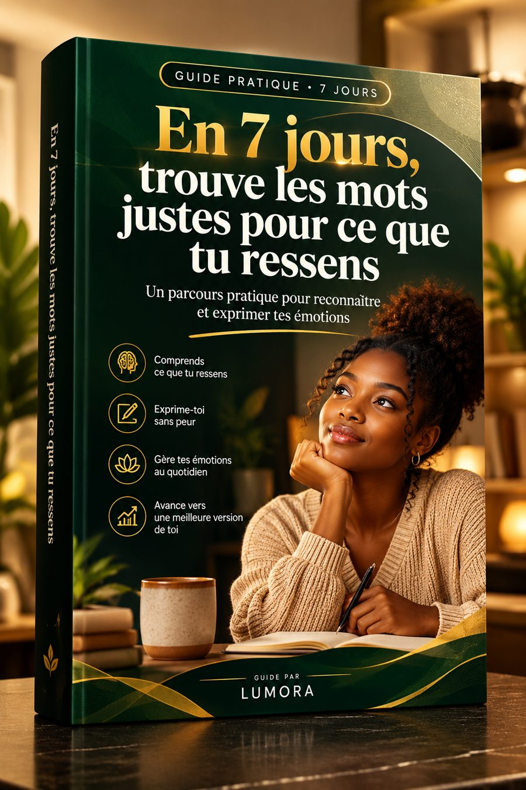
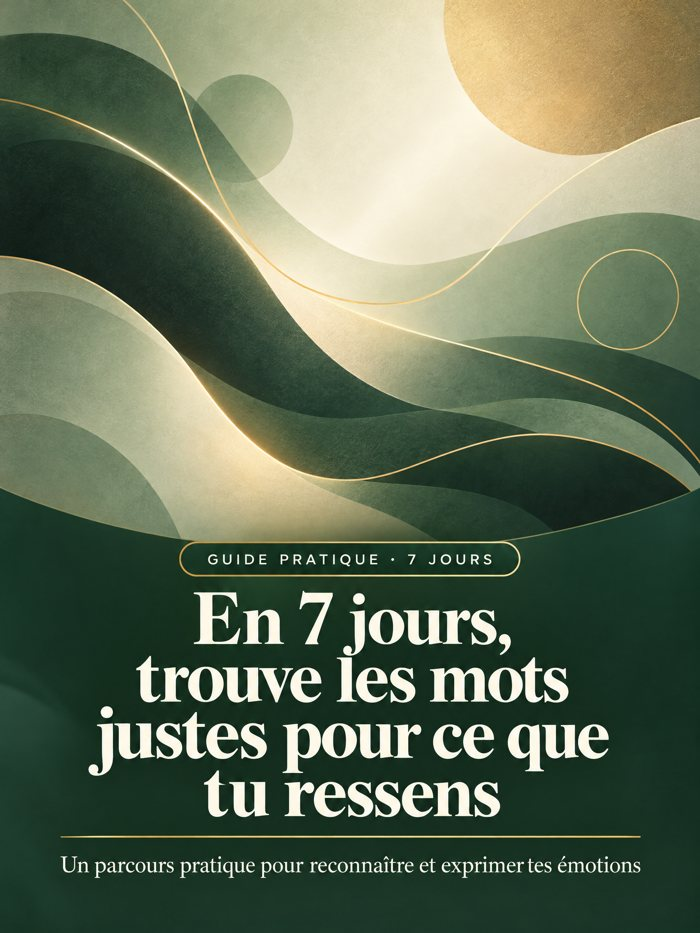

Guide PDF + 16 audios
Un petit exercice par jour, de 5 à 15 minutes, pour passer de « ça va » à une phrase claire que tu peux vraiment dire à un camarade, un collègue ou un proche. Guide PDF et audios inclus.
5 000 FCFA · 4 200 FCFA avec le code NOW16 · Accès immédiat

Tu réponds « ça va » alors qu’au fond, quelque chose te pèse.
Quand quelqu’un te demande ce qu’il y a, tu ne sais pas par où commencer.
Après une discussion difficile, tu repasses la scène dans ta tête, tu rédiges un message puis tu l’effaces.
Au campus, au travail ou avec un proche, tu as parfois du mal à demander du soutien ou à poser une limite.
Et ensuite, tu te demandes pourquoi tu n’as pas réussi à dire ce que tu ressentais.
Parfois, une seule conversation te revient en tête toute la soirée. Tu te promets d’en reparler demain, puis une semaine passe.
Si rien ne change, dans six mois tu pourrais encore éviter les mêmes sujets ou répondre « ça va » sans réussir à expliquer ce qui te pèse. Les malentendus peuvent alors se répéter, et les autres ne peuvent pas deviner le soutien ou la clarification dont tu as besoin.
C’est comme porter un sac trop lourd sans jamais le poser : tu continues d’avancer, mais cela te fatigue.
Tu n’as pas à tout raconter d’un coup ; tu peux commencer par une phrase simple.
Voici le guide qui t’accompagne pas à pas
Un guide numérique pratique, accompagné de ses audios. Il t’aide à observer tes émotions, à trouver des mots plus précis et à préparer une façon claire de les exprimer.
Cette approche vient aussi de mon expérience. Avant, je restais souvent silencieux parce que j’avais du mal à exprimer ce que je ressentais vraiment. J’ai commencé par identifier ce qui m’avait dérangé, puis à l’exprimer simplement :
« Je n’ai pas aimé ça. La prochaine fois, s’il te plaît, explique-moi la raison. »
Pas besoin de trouver une phrase parfaite pour faire un premier pas.
Le guide propose des exercices à pratiquer dans ta vie quotidienne, au campus, au travail ou avec tes proches. Il ne remplace pas un accompagnement professionnel ; il t’offre des repères pour mieux comprendre et exprimer ton vécu.
Un guide PDF de 9 chapitres, 9 audios de chapitres et 7 audios de pratique.
Ton parcours pratique de 7 jours — savoir comment avancer et quoi pratiquer chaque jour.
Repérer les premiers signes — observer les signaux du corps, les pensées et les envies d’agir.
Distinguer émotion, pensée et réaction — séparer les faits de tes interprétations et de ce que tu ressens.
Trouver des mots plus précis — aller au-delà de « ça va » ou « je suis énervé ».
Comprendre les déclencheurs et les besoins — repérer ce qui a compté dans une situation et ce qui pourrait t’aider.
Tenir un journal des émotions — faire le point en quelques minutes avec une note simple.
Dire ce que tu ressens sans attaquer — préparer une phrase claire avec un fait, une émotion et une demande.
Adapter ta façon d’en parler — trouver une manière appropriée avec un proche, au campus, en famille ou au travail.
Garder le réflexe et mesurer tes progrès — créer un petit rituel et savoir quand chercher du soutien.
Tu reçois 9 audios de narration des chapitres et 7 audios de pratique, un pour chaque jour. Tu peux lire ou écouter le parcours et avancer à ton rythme.
Avant, je restais souvent silencieux. J’avais du mal à exprimer mon ressenti. J’ai commencé par identifier et analyser ce qui m’avait touché, puis par le dire avec des mots simples. C’est cette démarche que j’ai voulu rendre pratique dans le guide.

Le guide et 16 pistes audio pour lire, écouter et mettre le parcours en pratique.
5 000 FCFA
4 200 FCFA
Entre le code NOW16 au paiement pour obtenir −16 %
Tu as 7 jours après ton achat pour découvrir le guide et ses audios. Si le contenu ne te convient pas, écris-moi à [contact] dans ce délai pour demander un remboursement.
Il vise surtout les jeunes adultes francophones, étudiants ou jeunes professionnels. Les exercices peuvent aussi être utiles à d’autres adultes qui souhaitent mieux exprimer ce qu’ils ressentent.
Non. Tu peux noter quelques mots dans un cahier ou dans ton téléphone. Le guide t’encourage à commencer simplement.
Le parcours propose un exercice par jour. Si tu rates une journée, ce n’est pas un échec : reprends le jour suivant ou refais l’exercice qui te semble utile.
Le pack comprend le guide PDF, 9 audios de chapitres et 7 audios d’exercices pratiques.
Non. Il t’aide à pratiquer une communication plus claire, mais il ne contrôle pas la réaction des autres et ne garantit pas un résultat précis.
Non. C’est un support éducatif et pratique, pas un soin. Si ta détresse persiste, perturbe fortement ta vie ou si tu te sens en danger, cherche l’aide d’une personne de confiance ou d’un professionnel.
Tu peux commencer par un petit pas : observer une émotion, trouver un mot plus juste, puis préparer une phrase. Avance à ton rythme, un jour après l’autre.
Je commence le parcours de 7 jours5 000 FCFA · 4 200 FCFA avec le code NOW16